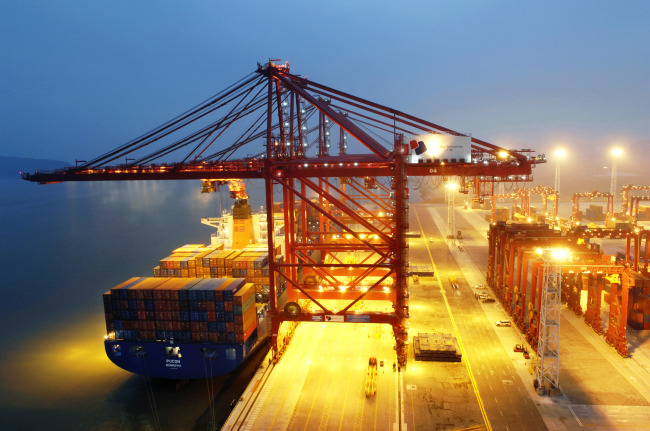

TRANSPORTE MARÍTIMO
Introducción
Hoy en día un buque mercante alcanza fácilmente velocidades de 18 nudos. (Nudo o knot es el término utilizado paramedir las millas náuticas por hora). Es barato ya que se beneficia y por que puede tomar ventaja de lo que se conoce como economías de escala. Por ejemplo, la utilización de grandes barcos puede reducir el coste de transporte por unidad. Los grandes barcos de hoy en día reducen considerablemente la repercusión del coste del combustible en el transporte por unidad comparado con cualquier otro método de transporte. Allí donde la tierra es separada por agua la única alternativa es el de transporte aéreo pero ésta es bastante cara. En algunos casos específicos existen otras vías alternativas (como las tuberías para algunas mercancías), o incluso grandes puentes o túneles como el Túnel del canal.
El crecimiento en el negocio marítimo mundial：tabla 1 Años 1929-1990
| Año | C.Seca | C.Líquida | Peso | Valor |
| 1929 | 390 | 65 |
| 1950 | 299 | 55 |
| 1960 | 540 | 540 | 1.080 | 118 |
| 1970 | 1.250 | 1.241 | 2.491 | 297 |
| 1980 | 2.000 | 1.596 | 3.596 | 1.882 |
| 1990 | 2.450 | 1.450 | 3.900 | 3.250 |
*Los valores correponden a valor FOB
*Las cifras están expresadas en millones de toneladas.
Como se puede observar en la tabla arriba expuesta, la demanda de carga ha aumentado de manera constante desde la Segunda Guerra Mundial más del doble comparado con los años 60. Las mercancías líquidas adoptan una situación similar excepto posterior a la caída del precio del petróleo en el año 1973. El negocio total por valor es incluso más impactante aunque para establecer la comparativa real deberíamos tener en cuente la inflación. Como primera lectura de los datos, (éstas cifras demuestran un incremento constante del tonelaje a transportar), tendremos a deducir que esta industria, la del shipping, va a ser próspera.

Los diferentes mercados
El negocio marítimo mundial y en relación con la carga puede dividirse en tres tipos principares de mercado, los cuales describiremos tipos principales de mercado, éstos son：
(1)La Línea Regular
Se carga general. La carga general es, como suguere el nombre, trabajar con partidas mezcladas. El término normalmente se refiere a artículos empaquetados que generalmente están finalizados o parcialmente fabricados. El paquete puede hacer referencia a un simple cartón o varios contenedores. Este tipo de mercancía es relativamente cara comparada con el granel, y los buques de línea regular nevegan bajo rutas programadas, tabla de escalas así como con condiciones y fletes ya fijados.
(2)El mercado Tramp de carga seca
Quizás la primera impresión a la palabra Tramp nos lleva a pensaren barcos viejos y sucios pero ésta no es de ninguna manera la derivación de la palabra. Tramp, en terminos marítimos, hace referencia a la forma que el buque ¨Trampea¨ de lugar otro allí donde le lleva el mercado. De un pundo A, a un punto B con una mercancía y posteriormente un corto trayecto del punto B al C para cargar con destino al punto D y así sucesivamente. Totalmente contrario a la Línea Regular que como indica la palabra sigue un trayecto ya fijado con una cierta regularidad por viaje.
Los buques Tramp transportan básicamente materiales a granel como minerales, grano, carbón, etc. Básicamente estos buques transportarán cualquier mercancía a cualquier destino, siendo los fletes y las condiciones negiciables en cada caso específico. El tipo de negocio en este mercado se subdivide en varios subgrupos dependiendo del tamaño del barco y de su especialización.
(3)El mercado de Tramp de carga líquida – los buques tanque
Los buques Tanque son particularmente buques tramp especializados y diseñados para el transporte de mercancías liquidas a granel. Los precios y las condiciones de transporte en este tipo de buques fluctúan libremente de lgual manera que el mercado de carga seca. Este grupo contiene dos divisiones principales, los grandes buques petroleros y los buques tanque más pequeños (parcel tankers) especializados para el transporte de cargas químicas o de productos refinados, en varios compartimentos del barco.
La diferencia entre los mercados de la línea Regular y del Tramp no ha estado siempre tan clara como lo es en la actividad. Expezó gradualmente a mitades del siglo pasado cuando aparecieron los barcos a vapor y empezaron a ofrecer servicios regulares entre puertos. Estos empezaron a ofrecer servicios más rápidos y de mayor calidad que los barcos a vela y, a pesar de que sus fletes eran más altos, atrayendo aquellos embarcadores con importantes volúmenes de carga y que estaban dispuestos a pagar un coste adicional por la rapidez y unas fechas de entrega más predecibles.
La diferencia entre ambos tipos, desde un punto de vista más técnico, surge en los años 50 cuando el típico buque tramp se convierte en un especialista en la carga seca y en el transporte de mercancías brutas i no manufacturadas, con lo cual durante los años 60 el barco de carga general convencional se fue, cada vez más, reemplazando por el buque porta-contenedor.
Así pues los barcos de línea y los barcos tramp son tipos de barco diferentes y están operados también de distinta manera por, cada vez más, diferentes formas de gestión. Estos barcos transportan diferentes tipos de mercancías que también están gobernadas por distintas políticas de precio. Las conferencias, los gobiernos y políticas internacionales tales como el código de conferencias de línea de la UNCTAD, hacen incrementar si cabe más las diferencias entra estos dos mercados.
Los barcos
Consideramos dos tipos de buques como los principales soportes del mercado de la Línea Regular; estos son los buques porta contenedores y los barcos Ro-Ro, pero podemos ver a los barcos multi-propósito y a los tweendecker (doble cubierta) que aún operan como línea en algunos tráficos, sobre todo en países en vía de desarrollo.
Los buques porta-contenedores varían considerablemente en tamaño. Las bodegas de estos buques van provistas de guías para evitar el movimiento en bodega de estos contenedores una vez estibados. La manipulación siempre es vertical. Hoy en día la mayoría de buques porta-contenedores no tienen grúas de manipulación de mercancía a bordo ya que operan en terminales especializadas en contenedores y estas están equipadas con grúas terrestres bastante sofisticadas, conocidas como grúas pórtico (aparato de elevación formado por un puente elevado-pórtico-soportado por dos partes, que puede desplazar cargas vertical, horizontal y lateralmente maniobrando sobre raíles o neumáticos dentro de una superficie linitada.) Una carretilla pórtico es un pórtico móvil sobre ruedas neumáticas, destinado a mover y apilar contenedores desplazándose sobre una superficie plana y reforzada.
Las mercancías
Estas varían mucho de un tráfico a otro pero de manera general podemos considerar productos típicamente transportados por el mercado de la Línea Regular a: maquinaria, productos manufacturados, productos químicos, productos alimenticios, fruta, té, café, algodón, etc. Existen otras muchas mercancías que pueden ser transportadas tamto en bases de línea regular cono en tramp; éstas pueden ser el cemento, azúcar, papel, sal, aceites y grasas, etc.
Contenedor
De acuerdo a la definición ISO ( Internacional Standards Organisation) del año 1968 un contenedor es un artículo de transporte que：
•Es de forma fija.
•Es intermodal ( puente transportarse por diversas vías tales como por barco, camión, ferrocarril, etc.)
•Es fácilmente manipulable.
•Se llama y vacía fácilmente.
•Tiene un espacio interior superior a un metro cúbico.
La ISO incluye muchas estipulaciones entre las que están las mínimas especificaciones para la resistencia de un contenedor pero los estándares más importantes son los que hacen referencia a las dimensiones y a las manipulaciones. Las dimensiones estánder originales eran 8 pies de ancho y 8 pies de alto con una longitud de 10, 20, 30 o 40 pies. Posteriormente es aceptó una altura de 8 pies y 6 pulgadas y es hoy en día el tamaño estánder. También nos encontramos con bastantes contenedores high cubes con alturas de 9 pies y 6 pulgadas. Las logitud de 10 pies y 30 pies son hoy en día poco habituales, y la logitud más estándar es la de 20 pies, de tal forma que la manera habitual de hablar de contenedores hoy en día es en términos de TEU (Twenty Equivalent Units.) En terminos estadísticos también se aplica el término FEU (Fourty Equivalente Units) para hablar de contenedores de 40 pies.
Quizá el factor más importante que ha diferenciado la revolución del contenedor con cualquier otro intento de ¨Empaquetar mercancías en grandes cajas¨ ha sido la estandardización de las terminales portuarias y de los medios de manipilar estas cajas en tierras, de manera particular la toma de las grúas en las esquinas del contenedor con 3 agujeros de forma oval en cada esquina del contenedor. Esto no únicamente hace sencilla la operación de fabricación de dispositivos automáticamente de carga y de descarga sino que también hace sencillo el encajar el contenedor en una plataforma de un camión o en la cubierta de un barco y, adicionalmente, permite que los contenedores se encajen a ellos mismos en cualquier dirección con el uso de un simple twist-lock. Tales acoples conjuntamente con algunas cuerdas de ajuste especiales que también utilizan los encajes de las esquinas, permiten al barco asegurar los contenedores de manera rápida y segura incluyendo la carga de cubierta hasta alturas en algunos casos.
Los mismos encajes de las esquinas perimiten un casi infinito número de diferentes tipos de contenedores dentro de las dinmensiones estándar, incluyendo variantes tales como open tops, flat racks, etc. Y algunos ya más específicos como reefers y tank contenedores. Al inicio de la containerización, la mayoría de contenedores eran propiedad del armador pero a menudo que este concepto se iba convirtiendo más aceptado, emergieron las compañías de leasing las cuales permitieron a los armadores reducir su propio inventario de equipo y alquilar contenedores allí donde surgía la demanda.
La documentación
El documento más importante que está recionado con la mercancía en el negocio marítimo es el Bill of Lading (B/L) o conocimiento de embarque, y cuyas tres misiones específicas son：
•Recibo de la mercancía
El concepto es que cuando entregamos la mercancía a un barco, se nos devuelve un documento que nos sirve como recibo de la misma por el transportista. La regla del Bill of Lading como recino de la mercancía es fáfil de comprobar ya que demuestra y manifiesta quién es el embarcador, quien es el recptor, aquella información que identifica al barco, donde carga y donde se descarga. Es muy importante que permite ampliamente describir la mercancía y al fondo hay un espacio para la fierma (teóricamente el B/L debería ser firmado por el capitán del barco, sin embargo, en la Línea Regular, éstos son normalmente firmados por los agentes consignatarios de la línea.) Fijándonos en el B/L, y justo encima de la firma podemos observar la frase ¨shipped on board…¨, por lo que tenemos un recibo firmado por cuenta del capitán confirmando que las mercancías han sido cargadas en el barco.
•Evidencia de contrato de transporte
El bill of Lading nos sirve como documento que nos da la evidencia de un contrato entre el cargador y el transportista, con unas responsabilidades de transporte (puerto de carga, puerto de descarga).
Esta segunda característica del Bill of Lading como evidencia de contrato nos puede parecer extraña teniendo en cuenta todo el detalle que describe la mercancía, una firma y una amplia colección de cláusulas en el reverso. En realidad el B/L se asimila a un contrato pero no lo es como tal hasta que la mercancía ha sido embarcada, de hecho el contrato como tal ya había sido realizado vía bookings o reservas por escrito o incluso vía oral, antes de cargar y de emitir el B/L.
•Docuemnto de título
La tercera regla del B/L como documento de título tiene doble sentido. Primero, ¿qué significa documenro de título? Simplemente significa que quien sea que legalmente posea el B/L tiene el derecho de reclamar la mercancía. Esto, pues, permite que el B/L sea un instrumento negociable y permite que la mercancía a la cual se refiere el B/L pueda ser negociada y vendida de una parte a otra mientras el barco está viajando. La venta de la mercancía se evidencia con el transpaso del B/L al nuevo comprador. Si el nuevo compredor lo desea puede vender la mercancía a otro comprador y éste a otro, y así sucesivamente, hasta que finalmente se presenta en el puerto de destino y recibiéndose la mercancía a cambio.
Existe otra cualidad como documento de título ya que el B/L puede ser utilizado como seguro de pago de la mercancía. De hecho ésta es una de las misiones fundamentales que hacen del B/L una herramienta indispensable en operaciones de compra venta internacional. El B/L cubre esta función conjuntamente con el crédito documentario. El comprador da instrucciones a su banco de abrir una carta de crétido y que ésta esté disponible en el banco del vendedor. Cuando se embarca la mercancía el embarcador entrega el B/L (conjuntamente con cualquier otra documentación requerida por la carta de crédito, certificado de origen, packing list, etc.) al barco quien le abonará el valor de la mercancía si está satisfecho con los documentos recibidos, al estar estos en concordancia con la solicitud del banco del comprador a través de la carta de crédito. El banco del vendedor pasa ahora a tener el B/L en propiedad y lo entrega al banco del comprador a cambio del dinero. Es ahora el banco del comprador quien tiene el B/L como seguridad hasta que su cliente le paga y recibe el B/L a cambio.
Volviendo al B/L podemos observar que adicional al ¨Shipper¨ y ¨Consignee¨ en las primeras dos casillas de la izquierda superior encontramos una tercera que hace referencia al ¨Notify¨. El motivo es que si un B/L va a ser negociado a través de una carta de crédito no sería correcto mostrar el consignatario de la mercancía. El consignee, en el momento del embarque es, en teoría, el banco, pero el banco solamente quiere el B/L como seguro de pago y no quiere el B/L como título de propiedad. Lo que se hace es que el embarcador instruye consignar a la orden lo cual implica que el B/L tras ser endorsado se convierta en un documento abierto. El nombre del conceptor o de un repressentante va entoncer en la casilla del ¨Notify¨ lo que permite al agente del barco en el puerto de descarga saber a quien notificar la llegada de la mercancía.
Si el vendedor y el comprador acuerdan otros métodos de pago existe la posibilidad de utilizar el ¨Sea Waybill¨. Este documento es bastante similar al B/L pero la diferencia es que no es negociable. Lo único que implica es que se entregue la mercancía al consignatario de la misma sin necesidad de que este presente algún documento para su recepción.
TIPO DE TRANSPORTE MARRÍTIMO
Transporte intermodal
Designa el movimiento de mercancía en una misma unidad o vehículo, usando sucesivamente dos o más modos de transporte sin manipular la mercancía en los intercambios de modo. Por extensión, el término intermodalidad, se ha usado para describir un sistema de transporte en el que dos o más modos de transporte intervienen en el transporte de un envío de mercancías de forma integrada, sin procesos de carga y descaga, en una cadena de transporte puerta-puerta.
Transporte multimodal
Designa el movimiento de mercancías usando dos o más modos de transporte, cubierto por un contrato de transporte multimodal, entre lugares distintos. El transporte intermodal es un tipo de transporte multimodal.
Multimodalidad
Designa la organización de transporte mediante la simultaneidad de diferentes modos para un mismo itinerario en una zona geográfica concreta.
Transporte combinado
Es el concepto usado por la Comisión Europea para designar el transporte intermodal de mercancías entre estado-miembros de la Unión Europea en el cual los recorridos principales se realizan habitualmente en tren, vía navegable o travesía marítima y con el mínimo recorrido posible por carretera, exclusivamente en la etapa inicial y final.
ssQUIÉN ES QUIÉN EN LA OPERATIVA del TRANSPORTE MARÍTIMO
Cargador / shipper
Personas o compañías que confía en terceros el cuidado de las mercancías con tal de ser entregadas al destinatario.
Destinatario / consignee
Persona o compañía responsable de recoger la mercancía.
Transportista / carrier
Persona o compañía responsable del movimiento de mercancía ya sea directamente i a través de terceros subcontrados.
Armador / shipowner
Propietario real del buque, registrado a su nombre. Puede explotar el buque por si mismo o alquilarlo a terceros para su explotación a través de contratos de diversos tipos.
Fletador /charterer
Persona física o jurídica que alquila un buque para su explotación en la manera que estime conveniente.
Agente marítimo o consignatario / ship agent
Es el representante legal del armador del buque en el puerto. Realiza todas las gestiones necesarioas para el despacho documentak frente a las autoridades locales y da atención a la tripulación y al buque. Por cuenta del armador negocia, gestiona, liquida los fletes y gastos ocasionados por las mercancías y firma los conocimientos de embarque en la exportación y recibe los de la importación.
Estibador / stevedor
Empresa o persona que realiza las operaciones de manipulaci´n de la mercancía en tierra, carga y descarga de los buques. Habitualmente son contratados por el sonsignatario del barco.
Transitario / freight forwarder
El transitario es el intermediario que toma las disposiciones necesarias y/o proporciona servicios en representación del emisario. Puede ser especialista en transporte marítimo o de carga aérea, así como consolidador de cualquier modalidad de transporte. Con la contenerización se ha ido creando la figura del transitario como consolidador y/o NVOCC (Non Vessel Operador Common Carrier), en el transporte marítimo. Sus funciones están claramente definidas en el comercio internacional y Agrupadas en una Federación Internacional de Transitarios (FIATA).
Agente de Aduanas / custom broker
Es la persona física o jurídica, facultada por la dirección de Aduanas para tramitar la documentación necesaria en los despachos de esportación e importación de las mercancías así como los pagos de los aranceles, impuestos, licencias, certificados, etc., correspondientes frente a las autoridades aduanas por cuenta del usuario, explotador o importador. En ciertos países, la figura del agente de aduana está asociada a la de transitario.
|